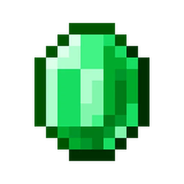
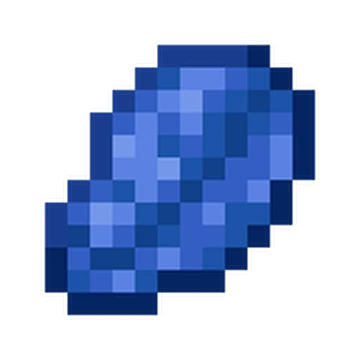
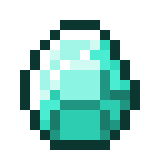

⛏️ Ore Level Guide
Find the best Y levels to mine each ore in Minecraft
üìä How to Use This Guide
Click on any ore card below to see detailed information about the best Y levels to mine that ore. The Y levels shown are the optimal ranges where you'll find the highest concentration of each ore type.
Coal Ore
Best Y Level: Y 95
Most common ore, found in mountains and caves. Range: Y 0-320. Can be mined with any pickaxe.
 Iron Ore
Iron OreBest Y Level: Y 15
Essential for tools and armor. Range: Y -64 to 320. Most abundant at Y 15 in deepslate layers.
Copper Ore
Best Y Level: Y 47
Used for redstone components and decorative blocks. Range: Y -16 to 112. Most common at Y 47.
 Gold Ore
Gold OreBest Y Level: Y -16
Rare ore, most abundant in deepslate layers. Range: Y -64 to 32. Peak generation at Y -16.
 Emerald Ore
Best Y Level: Y 236
Extremely rare! Only found in mountain biomes. Range: Y -16 to 320. Peak at Y 236.
 Lapis Lazuli Ore
Best Y Level: Y -32
Used for enchanting. Range: Y -64 to 64. Peak generation at Y -32.
Redstone Ore
Best Y Level: Y -59
Essential for redstone contraptions. Range: Y -64 to 15. Most common at Y -59.
 Diamond Ore
Best Y Level: Y -53
Most valuable ore! Range: Y -64 to 16. Best found at Y -53. Requires iron pickaxe or better.
Amethyst
Best Y Level: Y 0
Found in amethyst geodes. Range: Y -64 to 64. Used for spyglasses and tinted glass.
Nether Gold Ore
Best Y Level: Y 15 (Nether)
Nether variant of gold ore. Range: Y 10-117 (Nether). Better to find Nether Wastes or Crimson Forest biomes for more gold than strip mining.
Nether Quartz Ore
Best Y Level: Y 15 (Nether)
Found in the Nether. Range: Y 10-117 (Nether). Better to find Nether Wastes or Crimson Forest biomes for more quartz than strip mining.
Ancient Debris
Best Y Level: Y 15 (Nether)
Extremely rare! Range: Y 8-22 (Nether). Used to craft Netherite. Best found at Y 15.
üí° Mining Tips
- Strip Mining: For diamonds, mine at Y -59 in a straight line with 2-block spacing
- Branch Mining: Create branches every 3 blocks for maximum efficiency
- Fortune Enchantment: Increases ore drops significantly
- Silk Touch: Allows you to move ore blocks without breaking them
- Beacon Mining: Use a beacon with Haste II for faster mining
- Nether Mining: Ancient Debris is blast-resistant, use beds or TNT for efficiency